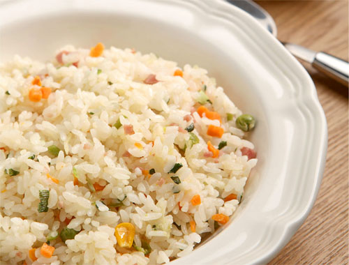

야채볶음밥
재료 : 식용유 2큰술, 베이컨 4장, 마늘3 쪽, 감자 1/2개,
당근 3cm, 양파 1/2개 파프리카 1/6 개, 밥 1공기, 소금 약간,
후추 약간, 맛술 1작은 술
소스 - 토마토 소스(파스타 소스 혹은 케찹등)4 큰 술,
우스터 소스 1/2 큰 술,버터 1큰 술
- 식용유 두른 팬에 마늘을 볶다 베이컨을 달달 볶습니다.
- 감자와 당근-양파 순으로 볶아주세요. 소금과 맛술도 넣습니다.
- 밥을 넣고 볶다가 파프리카도 넣어 줍니다.그리고 눌러 가면서 볶아 접시에 담습니다.
Tip. 볶음밥 위에 3분 짜장을 뿌려 드시면 더욱 맛있습니다.